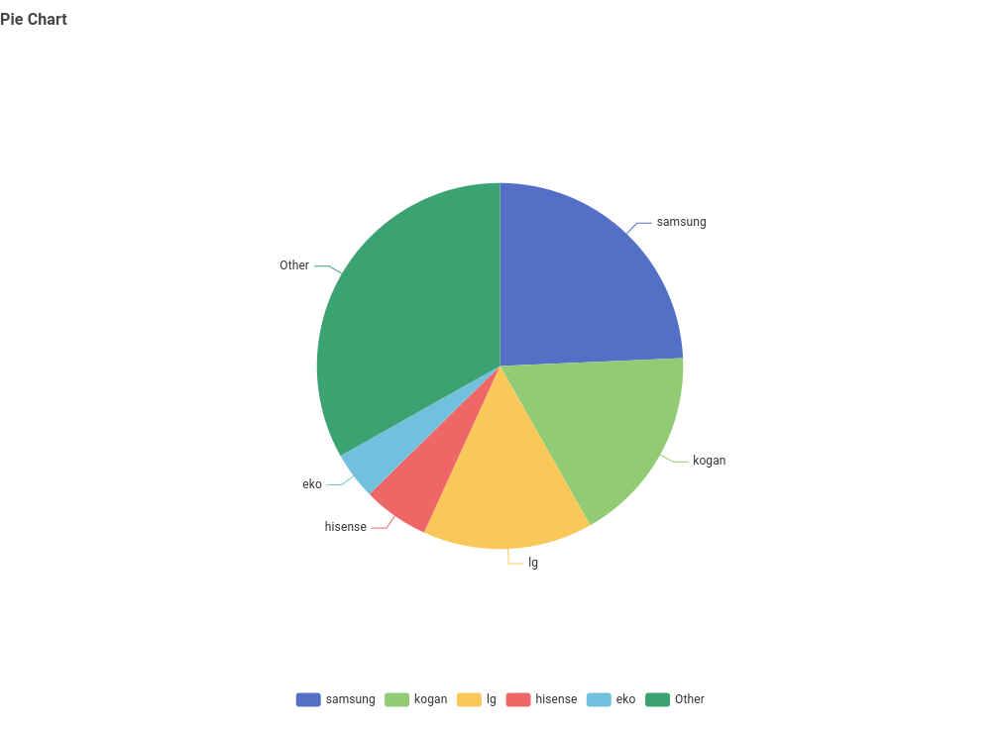
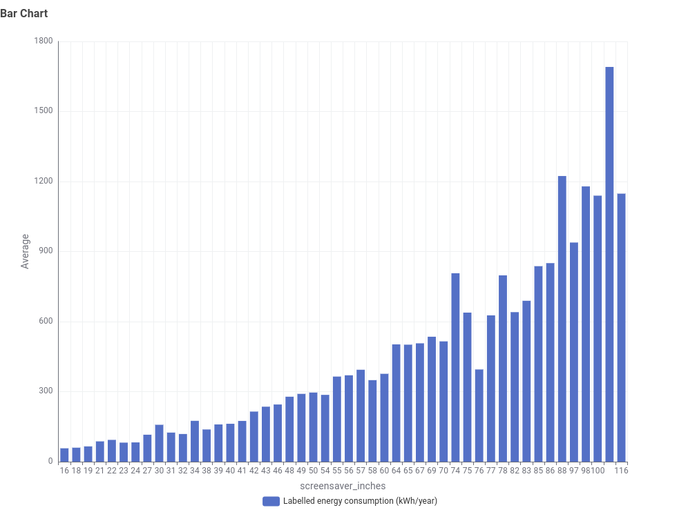

01
Everyday Consumers
People comparing televisions who want an easy-to-understand explanation of energy use.
THE STORY
This data story is designed to help a general audience understand how characteristics of televisions can relate to energy consumption.
STEP 1 · AUDIENCE
People comparing televisions who want an easy-to-understand explanation of energy use.
Readers interested in seeing how real data can be transformed into a visual story.
Users who want to understand relationships between television specifications and electricity consumption.
STEP 2 · QUESTIONS
What brands are represented in the television dataset?
Does television screen size appear to be associated with higher labelled annual energy consumption?
What should consumers consider when comparing television energy consumption?
STEP 3 · STORYBOARD
Introduce television energy consumption and explain why the topic matters to consumers.
Present charts that make patterns and differences in the dataset easier to compare.
Explain what the observed patterns mean and identify limitations before drawing conclusions.
STEP 3 · VISUALISATION
Two visualisations are used to communicate the main findings from the television dataset. The first shows the composition of brands in the dataset, while the second explores the relationship between screen size and labelled annual energy consumption.
The pie chart shows that the dataset contains televisions from a range of brands. Samsung is the largest individually identified brand, followed by Kogan and LG. However, the combined Other category represents the largest portion overall.

Story: The dataset is not dominated by one manufacturer. Instead, it represents a diverse range of television brands, which provides variety when examining television characteristics and energy consumption.
The bar chart compares screen size in inches with labelled annual energy consumption in kWh/year. The overall pattern shows that larger televisions generally have higher labelled annual energy consumption.

Story: Smaller televisions generally have lower annual energy consumption, while the largest screens show substantially higher values. The pattern is not perfectly consistent, so screen size is not the only factor affecting energy consumption.
THE MAIN FINDING
The two charts tell complementary stories. The pie chart shows that the dataset contains a diverse range of television brands, while the bar chart reveals a clearer relationship between screen size and labelled annual energy consumption.
The brand distribution tells us about the composition of the dataset. Samsung has the largest share among the individually named brands, but the many brands grouped into “Other” make up the largest portion overall.
The screen-size chart provides the stronger energy-related finding. As screen size increases, labelled annual energy consumption generally increases as well. There are some fluctuations between individual screen sizes, which shows that screen size alone does not determine energy consumption.
INTERPRETATION
The charts are descriptive: they show patterns in the available dataset. The bar chart suggests an association between screen size and labelled annual energy consumption, but it does not prove that screen size alone causes higher energy use.
Other characteristics of a television, such as its model and display technology, may also contribute to differences in energy consumption. Therefore, the findings should be used to understand the dataset rather than as a guarantee of the energy use of every television on the market.
When comparing televisions, a larger screen can be associated with greater annual energy consumption, so screen size is one useful factor to consider alongside the television's labelled energy information.
ABOUT THE DATA
Insert the exact name, provider and URL or citation of the television energy dataset used for Exercise 3.
Document filtering, cleaning, missing-value handling, calculations and grouping performed before visualisation.
State whether the dataset contains personal information. If it is product-level data, explain that no individual privacy data is presented.
Results depend on the quality, completeness and definitions used by the original dataset and may not represent every television model.
Present the data honestly, avoid misleading scales or selective reporting, and clearly identify uncertainty and limitations.
Generative AI was used to assist with website structure, wording and code preparation. Dataset analysis and final interpretation should be checked against the original data.